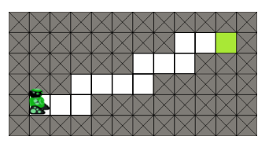
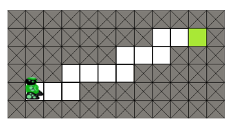
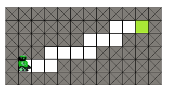

Contourner les obstacles

 

Programmer le robot pour qu'il atteigne la zone verte tout au bout du parcours, sans rentrer dans un obstacle.
Pour tester s'il y a un obstacle devant le robot, utilisez un bloc « si ».
Par exemple, pour déplacer le robot vers le bas s'il a un obstacle à sa droite, vous pouvez écrire :
if obstacleDroite():
bas()
Pour tester s'il y a un obstacle devant le robot, utilisez
un bloc « si / sinon »les instructions if / else.
Par exemple, pour déplacer le robot vers le bas s'il a un obstacle à sa droite, et vers le haut dans le cas contraire, vous pouvez écrire :
if obstacleDroite():
bas()
else:
haut()
Indication : au total, le robot doit se déplacer 16 fois vers la droite pour atteindre la zone verte.
Indication : au total, le robot doit faire 24 déplacements pour atteindre la zone verte.